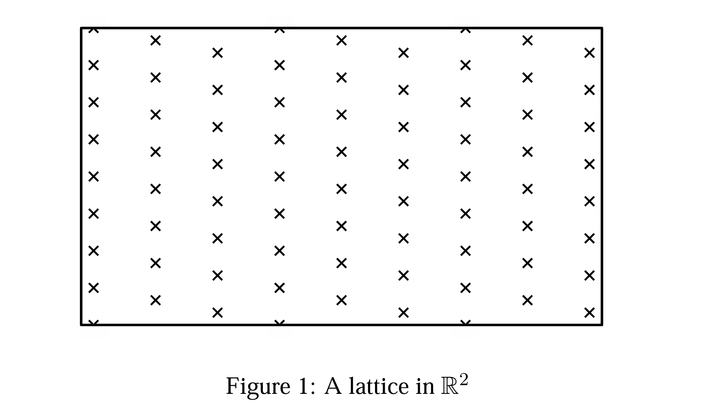
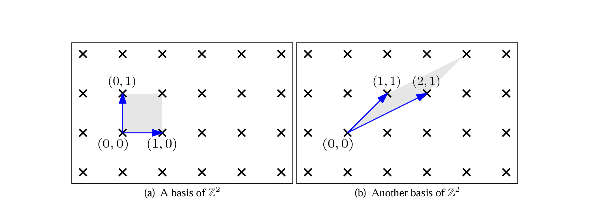
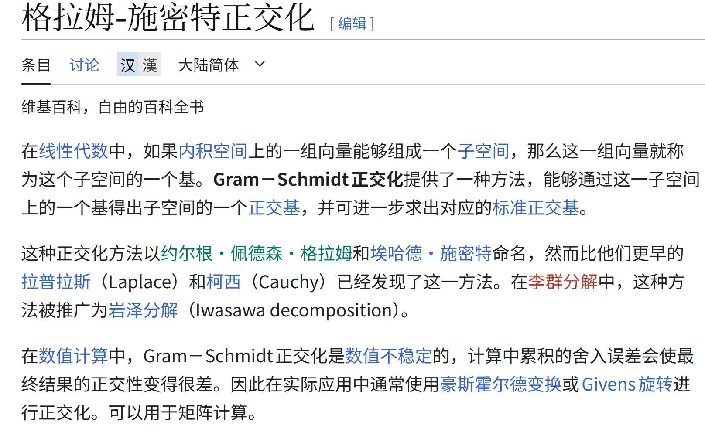
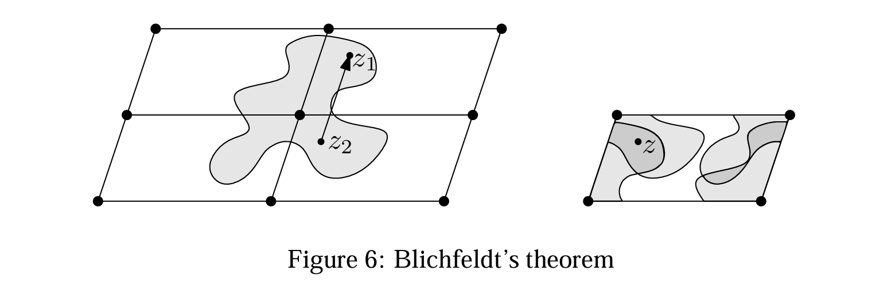
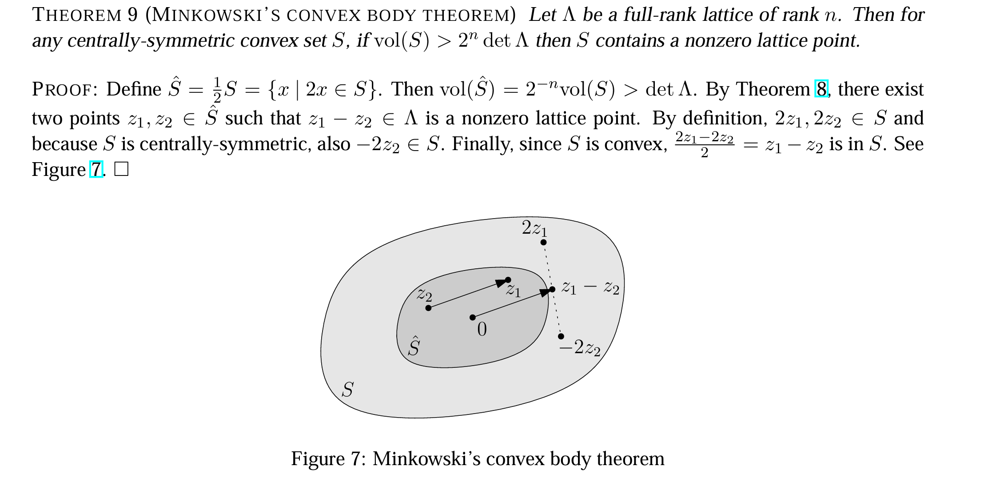
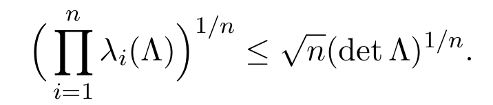

格密码学习笔记
1.格的定义
基：向量的集合，例如基向量（0，1）和（1，0）构成一个基
格：由基向量线性组合，

秩与维度：秩为基向量的个数 n，维度空间所在的维度 m。若 n = m 则称这个格为满秩格
基本平行体(Fundamental Parallelepiped)：基本平行体是由格的基向量围绕成的一个半闭半开的区域，给出一组线性无关的向量 b1, b2…., bn∈Rn，基本平行体就是：
$$ P(\mathbf{b}_1, \mathbf{b}_2, \dots, \mathbf{b}_n) = \left\{ \sum_{i = 1}^{n} z_i \mathbf{b}_i \mid z_1, z_2, \dots, z_n \in \mathbb{Z},\ 0 \le z_i < 1 \right\} $$例如：

图 a 的阴影面积为（0，1）和（1，0）组成的基本平行体，图 b 的阴影面积为（1，1）和（2，1）组成的
行列式和体积：这个基本平行体的体积 = 行列式，令 B 是格 L 的基矩阵，则格 L 的行列式定义为 det(L)=|det(B)|，以图 a 为例子，
$$ \mathrm{Vol}(A) = \left| \det\begin{pmatrix} 0 & 1 \\ 1 & 0 \end{pmatrix} \right| = 1 $$然后可以通过幺模变换来相互转换的基向量等价，简单说就是基向量可以通过幺模变换变成另一组基向量，这两组基向量的行列式一样，表示的格都一样
- 幺模变换：由幺模矩阵定义的线性变换
- 幺模矩阵：设 U 为整数矩阵，满足
- U 的所有元素都是整数
- det(U)= ±1（行列式绝对值为 1）
- 幺模矩阵的逆矩阵也是幺模矩阵
表示为：
$$ B'= B\ *\ U $$格的扩展空间：格基实系数组合生成的空间称为格的延展空间，表示为$span(L(B))=span(B)={Ba|a∈R^n}$，当格为满秩格时格的扩展空间是整个n维空间
在格空间内有两个困难问题：
- 最短向量问题 Shortest_vector_problem：寻找格中的最短向量
- 最近向量问题 Closest_vector_problem：寻找一个非格点距离最近的格点
Gram-Schmidt 正交化

正交化过程
设有一组线性无关的向量α1α2….αn，目标是构造正交向量组β1β2…βn，
正交化流程
$$ \beta_1 = \alpha_1\\ \beta_2 = \alpha_2 - \frac{(\alpha_2, \beta_1)}{(\beta_1, \beta_1)}\beta_1\\ \beta_3 = \alpha_3 - \frac{(\alpha_3, \beta_1)}{(\beta_1, \beta_1)}\beta_1 - \frac{(\alpha_3, \beta_2)}{(\beta_2, \beta_2)}\beta_2\\ 所以\beta_n = \alpha_n - \sum_{i = 1}^{n-1}\frac{(\alpha_n, \beta_i)}{(\beta_i, \beta_i)}\beta_i\\ 投影的系数：\mu_{n,i} = \frac{(\alpha_n, \beta_i)}{(\beta_i, \beta_i)}\\ 标准化：\\ e_n = \frac{\beta_n}{|\beta_n|} $$3.Successive Minima（逐次极小）
逐次极小描述了在一个空间中，一个凸集（比如一个对称的、中心在原点的物体）能装下多少个线性无关的、越来越长的格向量
3.1最短非零向量λ1
格Λ是由一组基向量线性组合（系数为整数）生成的向量集合。在这个集合里，去掉零向量后，所有非零向量中 “长度最短” 的那个向量的长度，就记为λ1（Λ）
$$ λ1(Λ)=inf \{∥v∥∣v∈Λ∖{0}\} $$Λ\0表示格Λ中除0之外的所有向量，inf表示最小值
3.2逐次极小的一般定义λi（Λ）
公式：
$$ \lambda_k(\Lambda) = \inf\left\{ r>0 \mid \exists \text{ 线性无关的 } \boldsymbol{v}_1,\dots,\boldsymbol{v}_k \in \Lambda \cap C(r) \right\} $$- λk（Λ）：表示格Λ的第k个逐次极小
- C(r)：指以原点为中心、半径为r的闭球
- Λ∩C(r)：格Λ中落在这个球里的所有向量
闭球C(r)：以原点为中心、半径为 ( r ) 的欧氏闭球，是所有到原点的距离不超过r的向量v的集合
这个公式表示：找到最小的半径r，使得该闭球内存在k个线性无关的格向量
BLICHFELD理论
对任意满秩格 $\Lambda \subseteq \mathbb{R}^n$ 以及可测集 $S \subseteq \mathbb{R}^n$，若 S 的体积 $\text{vol}(S) > \det\Lambda$，则必存在S中两个不同的点 $(z_1,z_2)$，使得 $(z_1 - z_2 \in \Lambda)$
如果集合S的体积比A的大（格A的体积等于行列式），那么存在集合的两个点的差属于格A

闵可夫斯基凸体定理
设任意满秩格 $\Lambda \subseteq \mathbb{R}^n$ ，$S⊂R^n$是一个凸的、中心对称的集合，如果$val(S)>2^ndet(A)$，那么$S∩(\Lambda \backslash \{0 \}≠∅)$，S中一定包含一个格向量。

闵可夫斯基定理第二定理
对任意n维格Λ：

Hermite定理:

n表示维度，为基向量的个数
公式含义：格的n个相继极小的乘积的n次方根，不超过Hermite常数的平方根与格行列式的n次方根的乘积
参考链接
格密码–数学基础–05Successive Minima与闵可夫斯基第二定理及赫米特常数_闵可夫斯基格点定理-CSDN博客
评论